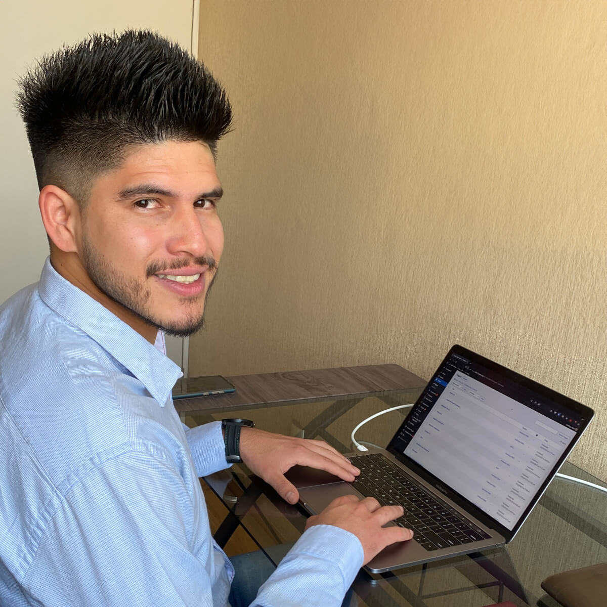

Hola, soy Alf Fonti
Desarrollador web
Qué hago
Diseño + Desarrollo
Utilizo un estilo moderno y las mejores prácticas de experiencia de usuario para crear sitios web atractivos y valiosos para mis clientes.
Comercio Electrónico
Construyo tiendas virtuales de fácil manejo para productos físicos o servicios digitales como cursos online, ebooks, etc.
WordPress
Proporciono personalizaciones a medida para sitios web de WordPress. Me aseguro de que los sitios que desarrollo sean robustos, confiables y efectivos.
Quién soy
Diseñador & desarrollador
Soy un desarrollador web que ayuda a las personas y a las pequeñas empresas a expandir sus actividades a través de Internet. Trabajo de manera autónoma creando y manteniendo diversos productos o servicios para distintos clientes. Me enfoco en mejorar la experiencia del usuario prestando mucha atención a los detalles.
Soy una persona proactiva y comunicativa a la que le gusta usar jerga no técnica cuando hablo con mis clientes y me aseguro de que comprendan todos los aspectos del proceso de diseño web.
Mis proyectos
Algunos de mis trabajos realizados